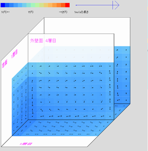
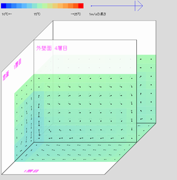
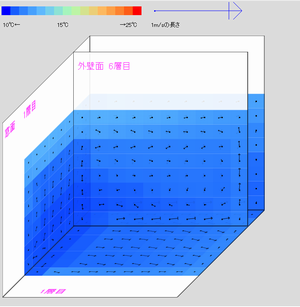
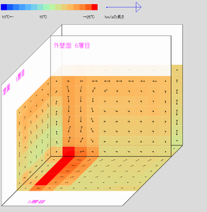
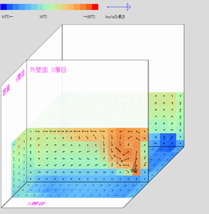
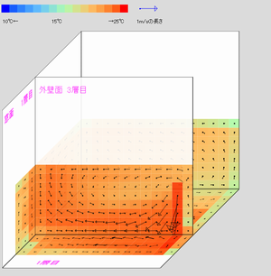
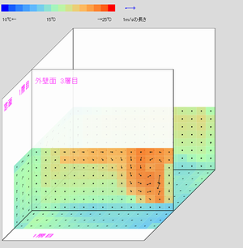

このソフトは、部屋の冷暖房時における空気の流れをシミュレートするために作成しました。暖房時に窓で冷やされた空気がどのように流れるのか（コールドドラフト）、それを衝立でどのように防げるのか、窓の断熱性能を上げることがどのように快適性につながるのか、エアコン送風の強さで部屋の暖まり方が違うのか、サーキュレータの効果は、など空気の流れをビジュアルで示すことで省エネ対策の効果を説明するものです。
現在（Ver1.74 2017年6月30日版）では、直方体形状の部屋において、簡単なボタン設定で、部屋や窓の大きさ、断熱性能、風よけの大きさ、エアコンの送風、サーキュレータ設定などを変更してシミュレーションを実行できます。設定を詳細で比較したい場合には、パラメータを数値で設定して比較することもできます。このWEBソフトは無料で公開していますが、精度等についての保証はありません。
画面左は、計算対象となる部屋の様子です。3つの平面が直角に交わった図が表示されますが、左面が窓のある外壁面、正面が窓のない外壁面、下が床面で、斜め上から見下ろした様子です。手前側にも壁がありますが、透明としています。初期状態で正面を向いている平面が、もう一枚、部屋の中央付近に表示されますが、気温や温度分布などをこの面で表示しているもので、前後に移動させることができます。
色は温度を表示しています。暖房が効いている場合には赤やオレンジ、冷えた場合には青色となります。温度の凡例は左上に表示しています。
風の向きと強さは計算を行う格子点ごとに矢印で表示されます。相対的な風速で矢印が表示されるため、凡例を参照してください。
画面の右で操作ができます。条件を設定し、「計算」タブを選び、「計算実行」をすると、計算が始まります。シミュレーション内時間で1分ごとにデータが得られて、画面が更新されます。
3次元でのCFD（Computational Fluid Dynamics 数値流体力学）の計算を行っています。フラクショナル・ステップ法ですが、精度が高いとされる3Dスタガード格子ではなく、障害物等の設置をモデル化しやすくするために3Dレギュラー格子とし、速度輸送方程式は一次の川上差分、粘性項は中央差分を用いています。レギュラー格子のため、長時間のシミュレーションを行っていると、チェーカーボード圧力場が生じることが確認できます。
初期設定の格子は8×8×8程度の非常に粗い設定としています。比較的メッシュが小さいためコールドドラフトの60分経過相当のシミュレーション計算を、おおむね10秒以内に計算できます。エアコンやサーキュレータなど送風する場合、長時間相当のシミュレーションをする場合などは、より計算時間がかかりますが、通常のパソコンを使って計算の推移を確認することができます。さらに詳しく計算するためにメッシュを増やすことも可能ですが、メッシュ数に応じて急速に計算が遅くなりますので、パソコンの能力に応じて設定してください。計算単位時間は、クーラン数に応じて自動的に調整されるため、通常はエラーで止まることはありません。
初期値が設定されているので、「計算開始」ボタンを押すと、シミュレーション内時間で1分ごとに結果がアウトプットされ、動画のように表示されます。初期状態は、室温18℃、屋外温度5℃、断熱がされていない部屋での、窓や壁からの冷気による空気の流れについて60分相当が、1分ごと表示されます。
計算はWEBブラウザで行います。web worker の仕組みを使っているために、計算側と表示側を切り分けることができ、リアルタイムで計算の進行状況を表示できます。ただし、指定された時間の計算中は、計算を止めることはできません。もし「計算」ボタンを押してしまうと、終了後に連続して計算が始まります。この場合には、ブラウザ（タブ）を閉じて改めてアクセスしてください。
部屋の大きさを変えたり、衝立、エアコン、サーキュレータを設定したり、窓や壁の断熱の程度を変更するなどして、計算をすることができます。
モデリングについては、家屋の一部屋を想定し、直方体に固定しています。2面（正面と左面）が屋外に面しており、左面のみに窓を設置できます。エアコン・サーキュレータの位置は、固定です。簡素化していますが、そのために、設定変更が容易となり、比較がしやすくなっています。
結果の図は元のレイアウト設定と同じ簡易3Dで表示され、左側は窓面、正面は室内側の壁（手前・右も室内側という想定です）、下は平面図です。矢印は風の流れを示し、色は温度を示しています（凡例参照）。壁面や障害物についても、温度に応じた色がつけられています。それぞれ何層目の結果を表示しているのか、右の操作盤で変更することができます。
左図は床面（もっとも床側に近いレイヤー）を、右図はセンターレイヤーを表示していますが、それぞれ上下、前後でレイヤーを移動させて表示させることができます。
主な数値結果は、テキストエリアに一覧で表示することもできます。
モデル化にあたって、実際の暖房と異なる点（省略した点）としては、室内の備品がないため熱容量が小さくすぐに暖まる、室内の熱発生を考慮していない、天井・床・外壁に接しない壁面は熱移動がない前提としている点などがあります。
初期状態でスタートを押すと、左窓から冷気が流れ落ち、部屋全体が冷えていく様子が見られます。窓や壁の断熱性能を高める、もしくは窓のサイズを変更することで、床面の最低温度、最大風速がどのように違いが出るか比較できます。
 6畳、初期室温18℃、外気温5℃、小窓、60分後。左：壁無断熱・シングルガラス、右：複層ガラス、100mmグラスウール相当断熱。
パネルヒータを設定すると、窓からの風を止め、室内側を暖かく保つことができます。こうしたヒータは、窓側に設置するほうが快適です。
 上記条件。左：ついたてを窓際に設置、右：パネルヒータ（表面40℃）設置。
部屋の面積は8畳から12畳がおすすめです。強で暖房すると風が床全面を伝って部屋全体を暖めていきますが、弱で暖房すると、床まで届かなかったり、部屋の中央で上昇気流を生じたりして、特に部屋の反対側が寒いままの状態が長く続きます。ただし、床の最大風速をみると、0.5m/sを超えており、強風があまり快適でない様子も伺えます。自動運転（暖まったら弱風にする）設定だと、暖まった状態で風速もかなり抑えられます。
 15畳、初期10℃、外気温5℃、90×200cm窓、右壁に出力2.8kWエアコン、20分後。左：弱風、右：強風。
弱風の暖房でも、部屋の反対側にサーキュレータを上向きで設置すると、部屋全体を循環する風がうまれることがあります。床の風速も、かなり抑えることができながら、部屋全体を効率的に暖めることができます。ただし、一定の風速がないと、風が分断されて効果が薄い場合もあります。
条件同上。エアコンは弱風とし、左窓下にサーキュレータを上向きに設置。
Ver1.3 2016年2月4日版
Ver1.4 2016年2月11日版
Ver1.5 2016年2月15日版
Ver1.6 2016年5月9日版
Ver1.61 2016年7月12日版
Ver1.62 2016年8月17日版
Ver1.63 2016年10月25日版
Ver1.64 2016年11月6日版
Ver1.70 2017年1月4日版
Ver1.71 2017年3月30日版
Ver1.72 2017年4月20日版
Ver1.73 2017年6月28日版
Ver1.74 2017年6月30日版